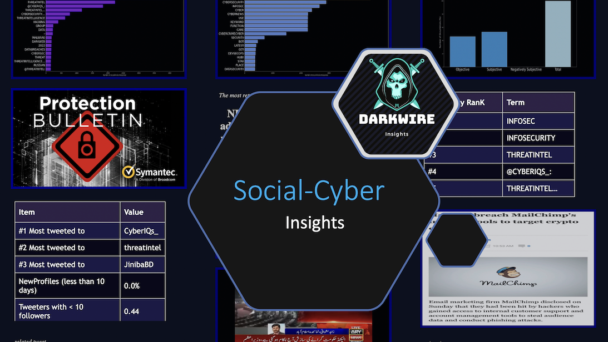

Real time social-cyber analytics
DarkWire
Traditional & Social Media CyberSecurity related insights, including realtine news feeds, Twitter analytics and more. (In Development)
mail: murchie85@gmail.com
Site Progress
Overall Site Completion
65%
Data Obtained
45%
Feature Completion
50%
HomePageMurchie85